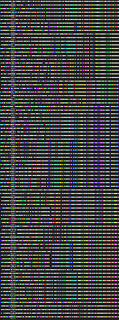

/THOUGHTS/
Endless cognitive noise.

>INANE COMMENT
This is an experimental area of the site, where I'm going to document my mental flow, and try and make gateways to my mind. Short thoughts that don't require much effort, or are just text will be pasted here, but complex thoughts may get their own pages linked from here.
DATE:/4/6/2021 TITLE: /DARK/
I'm sure I'm not the only one, but is there anything better than turning off all the lights in your
room, putting the blackout curtains down, having a coffee to the right of you, and just hammering
out work on projects while listening to electronic tunes. Comfiest thing ever. The hours can just
melt away, especially when you're working on something you really enjoy.
DATE:/3/6/2021/ TITLE: /THE RITUAL OF A NEW COMPUTER/
I recently received a very comfy new laptop in the mail, the day before yesterday actually. In the process of setting up this computer, I encountered a number of issues, mainly, lagging while typing and very annoying
freezing issues. I've spent the last 11ish hours attempting to fix this issue, before realizing quite humorously that I had found the solution hours before, but had misplaced a single = character, causing the fix not
to work. After the relief of realising that my new laptop was not at fault for the issue, It occured to me that every single laptop I own has gone through a similar trial by fire. With each setup there has been a problem
that's taken a while to fix. A ritual breaking in of the new machine. Very rewarding, but also extremely irritating.
DATE:/2/4/2021/ TITLE: /NIGHTMARE FORMATTING/
When writing the CSS and HTML for most of these pages I had absolutely 0 idea of what formatting or indentation was. This left me a nightmare of completely frankenstein illegibility when trying to edit (or even read the source) of these pages. Currently I'm going through them in vim and trying to correct that.
DATE:/10/8/2020/ TITLE: /EXPERIMENTAL PAGE/